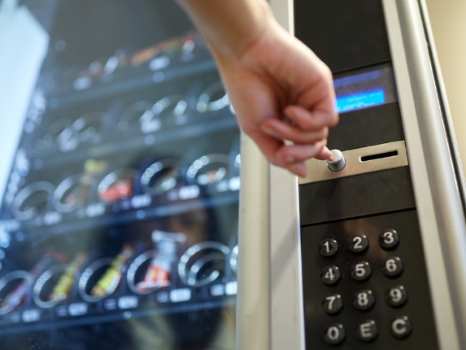
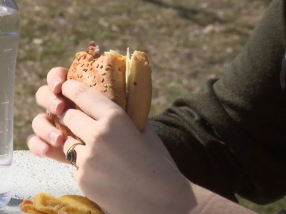
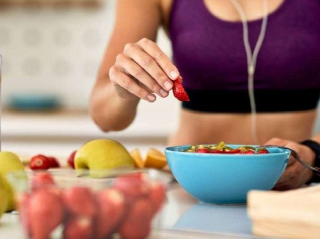
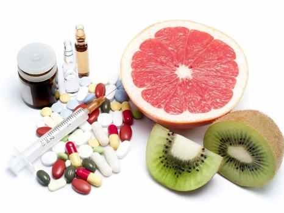

¡Si algún artículo aquí presente es de tu interés, no dudes en hacer click en la imagen para ir al artículo original!
El sistema de venta automática ofrece pocos alimentos saludables e impide consultar la información nutricional antes de elegir y comprar los productos
Un artículo sobre las malas prácticas que rodean a las máquinas vending, la psicología, y lo que hacen, o no, las leyes

Descubre cómo las máquinas de vending se reinventan con opciones saludables, sostenibles y equilibradas. Una tendencia en auge en empresas, escuelas y espacios públicos.
Un artículo que ofrece información sobre la nueva tendencia de las máquinas vending saludables.

La introducción masiva de los ultraprocesados coincide con un aumento alarmante de casos de cáncer de colon y gástrico
Un análisis sobre los alarmantes resultados de estudios relacionados con los alimentos ultraprocesados, y los problemas que pueden llegar a desarrollarse gracias a la desinformación.

Elige un tentempié saciante, rico en fibra y antioxidantes, ideal para cuidar tu salud sin renunciar al sabor
¡Un análisis de las palomitas de maíz, una alternativa saludable a otros snacks!

La absorción de las moléculas farmacéuticas puede verse reducida, aumentada o no sufrir ninguna consecuencia según lo que comamos o bebamos. Guía para evitar riesgos.
Un artículo sobre buenas, y malas prácticas a tener en cuenta a la hora de utilizar ciertos fármacos, y sus consecuencias.